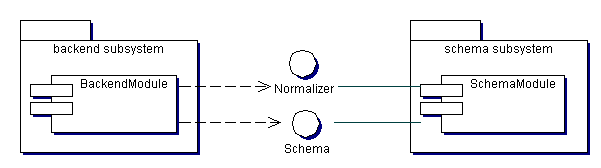

$Id: dnnormalization.html,v 1.1.1.1 2002/11/13 23:46:12 akarasulu Exp $
Distinguished names as specified by RFC 2253 or RFC 1779 (obsoleted by 2253) should be normalized for Backend storage when used as keys. Without normalization equality matching against inconsistant user formated strings will fail miserably. Several articals and forums have debated how the normalization should proceed. In the 1.4 JDK a new X500Principal class handles normalization of distinguished names from a String representation and an BER encoder ASN.1 representation. SUN describes it better than I can in the Javadocs for X500Principal.
The Naming subsystem of our server shall use such a class or define it's own canonicalization of the distinguished name. The best bet is to use X500Principal yet there might be an advantage to making this aspect a pluggable feature since many ways exist and arguments over the matter are still unsettled.
Regardless of the means used to generate DN keys (normalized DNs) the original user provided formating of the DN at creation or modification time shall be preserved under the Entry's attributes or its operational attributes depending on what DN we are refering to. So when we return the entry to the user it is formatted exactly in the way the user provided the DN in the first place. Some operational DN attributes managed by either the Backend or the naming subsystem of the server will be kept in normalized form.
Backends receive entries for creation starting with the suffix or root Entry of their Directory Information Base (DIB). Operational keyed DNs must be provided in normalized and user provided formats. Other non-operational or administrative attributes may need normalization based on their specific attribute syntax if they are indexed: presuming the backend manages indices. The Backend must interface with both the schema subsystem and an attribute syntax specific normalizer to generate the appropriate normalized keys in canonical form for these attribute indices.
Matching rules, attribute syntax, and attribute type information is required to correctly normalize attributes. For example case sensitive strings can not be case normalized (i.e. all lower cased) for use as keys. If case sensitive strings are case normalized we would not be able to store things like Unix file names: Notes.txt and notes.txt could not exist as separate files within a common directory. Because schema information is required to format/normalize/canonicalize attribute values for key representation the normalization functionality should be provided by either the Schema subsystem or by a Normalizer component that is dependent on the Schema subsystem or rather generated/provided by it. Figure 1 shows how the intramodule dependencies would look:

The Backend subsystems would be dependent on components and interfaces within the schema subsystem. Normalizers will obviously be dependent on the nature of the attribute so the SchemaModule would provide access to one based on an attribute type via the Schema interface. A Backend would be provided a handle to the Schema subsystem by the server at some point in the module's lifecycle. The Backend in it's solid state would ask the SchemaModule for its Schema using its suffix as a parameter. The module would return the appropriate schema for that Backend. The Backend would then proceed to ask the Schema for an attribute specific Normalizer by providing the name of the attribute as a parameter to a getNormalizer method on the Schema interface. The Normalizer would then be used to generate a normalized attribute value from the user provided attribute value which can now be used by the Backend as a key.